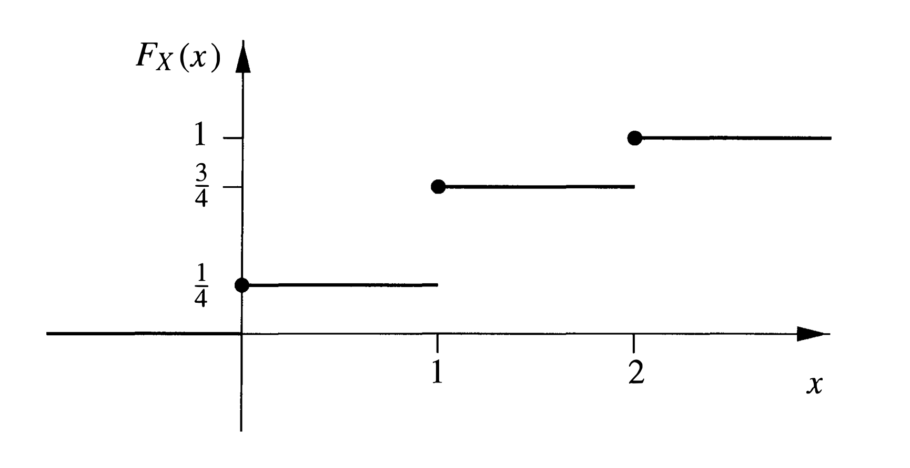
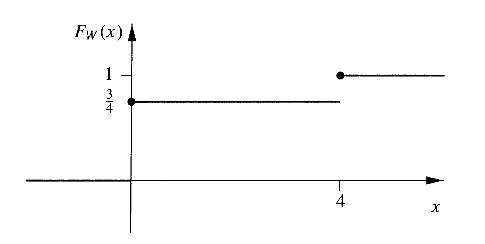
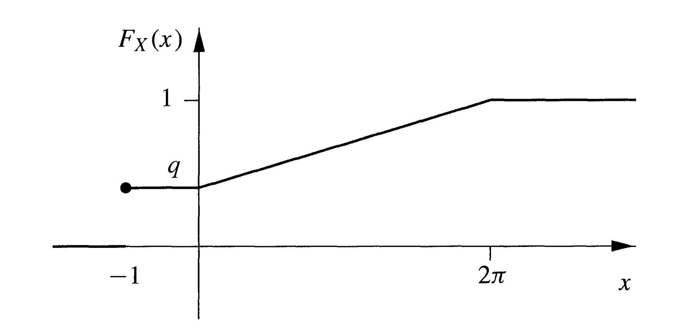
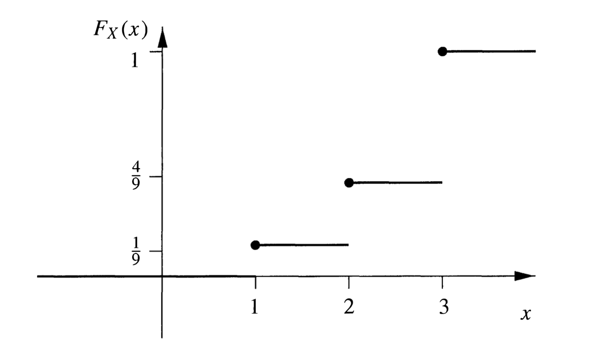
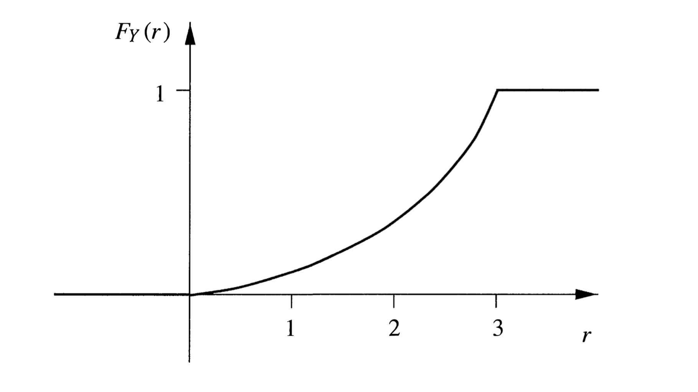
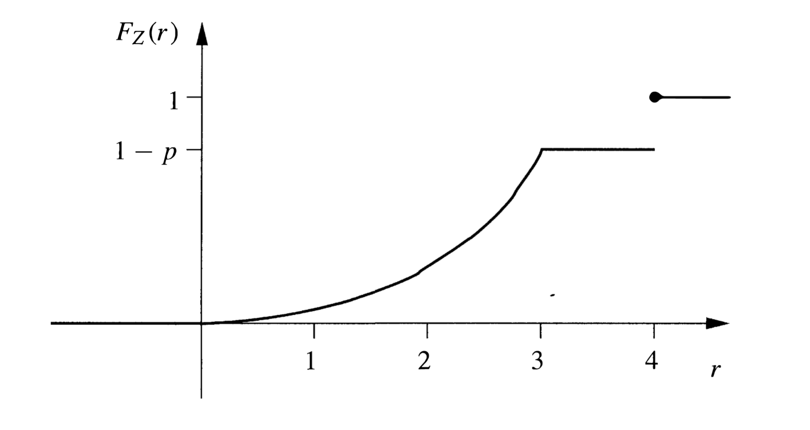

第二章 随机变量及其分布
1、Random variables(随机变量) 我们通常对一些试验的结果更感兴趣，而不是试验本身，正如赌徒们更关心游戏的输赢，而不是游戏本身的乐趣。
我们把用实数表示试验结果的过程看成一种函数，其定义域为 Ω \Omega Ω R \mathbb{R} R
这样的函数被称为 random variables(随机变量) .
Example 1. 投掷一枚均匀的硬币两次，则Ω = { H H , H T , T H , T T } \Omega=\{\mathrm{HH}, \mathrm{HT}, \mathrm{TH}, \mathrm{TT}\} Ω = { H H , H T , T H , T T } ω ∈ Ω \omega \in \Omega ω ∈ Ω X ( ω ) X(\omega) X ( ω ) X ( H H ) = 2 , X ( H T ) = X ( T H ) = 1 , X ( T T ) = 0 X(\mathrm{HH})=2, \quad X(\mathrm{HT})=X(\mathrm{TH})=1, \quad X(\mathrm{TT})=0 X ( H H ) = 2 , X ( H T ) = X ( T H ) = 1 , X ( T T ) = 0 1 1 1 W W W W ( H H ) = 4 , W ( H T ) = W ( T H ) = W ( T T ) = 0 W(\mathrm{HH})=4, \quad W(\mathrm{HT})=W(\mathrm{TH})=W(\mathrm{TT})=0 W ( H H ) = 4 , W ( H T ) = W ( T H ) = W ( T T ) = 0
当试验结束时，试验的结果 ω ∈ Ω \omega \in \Omega ω ∈ Ω
X : Ω → R X:\Omega\rightarrow\mathbb{R} X : Ω → R
也拥有了对应的取值，且取到每一个值的概率通常是不同的，这些概率依赖于我们的概率空间 ( Ω , F , P ) (\Omega, \mathcal{F}, \mathbb{P}) ( Ω , F , P ) X X X
我们希望能够定量地描述 X X X
f ( x ) = Probability that X is equal to x f(x)= \text{Probability that } X \text{ is equal to x} f ( x ) = Probability that X is equal to x
能够做到这一点，但是这个函数被证明在通常情况下是不合适的，我们一般使用 distribution function(分布函数)
F ( x ) = Probability that X does not exceed x F(x)= \text{Probability that } X \text{ does not exceed x} F ( x ) = Probability that X does not exceed x
更严谨的，定义为
F ( x ) = P ( A ( x ) ) F(x)=\mathbb{P}(A(x)) F ( x ) = P ( A ( x ) )
其中 A ( x ) ⊆ Ω A(x) \subseteq \Omega A ( x ) ⊆ Ω
A ( x ) = { ω ∈ Ω ∣ X ( ω ) ≤ x } A(x)=\{\omega \in \Omega \mid X(\omega) \leq x\} A ( x ) = { ω ∈ Ω ∣ X ( ω ) ≤ x }
但是，我们知道 P \mathbb{P} P F \mathcal{F} F A ( x ) ∈ F A(x)\in\mathcal{F} A ( x ) ∈ F
Definition 2. 随机变量是一个函数 X : Ω → R X: \Omega \rightarrow \mathbb{R} X : Ω → R x ∈ R x \in \mathbb{R} x ∈ R { ω ∈ Ω ∣ X ( ω ) ≤ x } ∈ F \{\omega \in \Omega\mid X(\omega) \leq x\} \in \mathcal{F} { ω ∈ Ω ∣ X ( ω ) ≤ x } ∈ F F \mathcal{F} F F \mathcal{F} F
通常我们用 X , Y , Z X,Y,Z X , Y , Z x , y , z x,y,z x , y , z
Definition 3. 随机变量 X X X F : R → [ 0 , 1 ] F: \mathbb{R} \rightarrow[0,1] F : R → [ 0 , 1 ] F ( x ) = P ( X ≤ x ) F(x)=\mathbb{P}(X \leq x) F ( x ) = P ( X ≤ x )
这与之前的定义显然是一致的，因为 { ω ∈ Ω ∣ X ( ω ) ≤ x } \{\omega \in \Omega\mid X(\omega) \leq x\} { ω ∈ Ω ∣ X ( ω ) ≤ x } { X ≤ x } \{X \leq x\} { X ≤ x }
我们可以把函数符号写为 F X F_{X} F X
Example 4. 在 Example 1 中，随机变量 X X X F X F_{X} F X F X ( x ) = { 0 , x < 0 1 4 , 0 ≤ x < 1 3 4 , 1 ≤ x < 2 1 , x ≥ 2 F_{X}(x)=\left\{\begin{array}{cl}
{0} & {,x<0} \\
{\frac{1}{4}} & {,0 \leq x<1} \\
{\frac{3}{4}} & {,1 \leq x<2} \\
{1} & {,x \geq 2}
\end{array}\right. F X ( x ) = ⎩ ⎪ ⎪ ⎪ ⎨ ⎪ ⎪ ⎪ ⎧ 0 4 1 4 3 1 , x < 0 , 0 ≤ x < 1 , 1 ≤ x < 2 , x ≥ 2 W W W F W F_{W} F W F W ( x ) = { 0 , x < 0 3 4 , 0 ≤ x < 4 1 , x ≥ 4 F_{W}(x)=\left\{\begin{array}{cl}
{0} & {,x<0} \\
{\frac{3}{4}} & {,0 \leq x<4} \\
{1} & {,x \geq 4}
\end{array}\right. F W ( x ) = ⎩ ⎪ ⎨ ⎪ ⎧ 0 4 3 1 , x < 0 , 0 ≤ x < 4 , x ≥ 4

Lemma 5. 分布函数 F F F lim x → − ∞ F ( x ) = 0 , lim x → ∞ F ( x ) = 1 \lim _{x \rightarrow-\infty} F(x)=0, \quad \lim _{x \rightarrow \infty} F(x)=1 x → − ∞ lim F ( x ) = 0 , x → ∞ lim F ( x ) = 1 x < y ⇒ F ( x ) ≤ F ( y ) x<y \Rightarrow F(x)\leq F(y) x < y ⇒ F ( x ) ≤ F ( y ) lim h → 0 + F ( x + h ) = F ( x ) \lim _{h \rightarrow 0^{+}} F(x+h)=F(x) h → 0 + lim F ( x + h ) = F ( x )
证明：( 1 ) (1) ( 1 ) B n = { X ≤ − n } B_{n}=\{X \leq-n\} B n = { X ≤ − n } { B n } \{B_{n}\} { B n } Lemma 1.3.7 可知
P ( B n ) → P ( ∅ ) = 0 \mathbb{P}\left(B_{n}\right) \rightarrow \mathbb{P}(\varnothing)=0 P ( B n ) → P ( ∅ ) = 0
另一部分的证明也是一样的。
( 2 ) (2) ( 2 ) A ( x ) = { X ≤ x } , A ( x , y ) = { x < X ≤ y } A(x)=\{X \leq x\}, A(x, y)=\{x<X \leq y\} A ( x ) = { X ≤ x } , A ( x , y ) = { x < X ≤ y }
A ( y ) = A ( x ) ∪ A ( x , y ) A(y)=A(x) \cup A(x, y) A ( y ) = A ( x ) ∪ A ( x , y )
且 A ( x ) , A ( x , y ) A(x),A(x,y) A ( x ) , A ( x , y )
F ( y ) = F ( x ) + P ( x < X ≤ y ) ≥ F ( x ) F(y)=F(x)+\mathbb{P}(x<X \leq y) \geq F(x) F ( y ) = F ( x ) + P ( x < X ≤ y ) ≥ F ( x )
( 3 ) (3) ( 3 ) B n = { X ≤ x + 1 n } B_{n}=\{X\leq x+\frac{1}{n}\} B n = { X ≤ x + n 1 } { B n } \{B_{n}\} { B n } Lemma 1.3.7 可知
P ( B n ) → P ( X ≤ x ) = F ( x ) \mathbb{P}(B_{n})\rightarrow \mathbb{P}(X\leq x)=F(x) P ( B n ) → P ( X ≤ x ) = F ( x )
事实上，该引理充分刻画了分布函数，也就是说，满足上面三条性质的函数一定是某随机变量的分布函数。
从现在开始，我们可以省略概率空间的那一套东西，集中精力于随机变量和它们的分布函数。
Example 6. Constant variables(常随机变量). 最简单的随机变量莫过于在整个样本空间 Ω \Omega Ω c ∈ R c\in\mathbb{R} c ∈ R X : Ω → R X: \Omega \rightarrow \mathbb{R} X : Ω → R X ( ω ) = c for all ω ∈ Ω X(\omega)=c \quad \text { for all } \quad \omega \in \Omega X ( ω ) = c for all ω ∈ Ω F ( x ) = P ( X ≤ x ) F(x)=\mathbb{P}(X \leq x) F ( x ) = P ( X ≤ x ) step function(阶跃函数) F ( x ) = { 0 , x < c 1 , x ≥ c F(x)=\left\{\begin{array}{cl}
0 & {,x<c} \\
1 & {,x \geq c}
\end{array}\right. F ( x ) = { 0 1 , x < c , x ≥ c c ∈ R c \in \mathbb{R} c ∈ R P ( X = c ) = 1 \mathbb{P}(X=c)=1 P ( X = c ) = 1 X X X
Example 7. Bernoulli variables(伯努利随机变量). 投掷一枚均匀的硬币，设 X : Ω → R X:\Omega \rightarrow \mathbb{R} X : Ω → R X ( H ) = 1 , X ( T ) = 0 X(H)=1, \quad X(T)=0 X ( H ) = 1 , X ( T ) = 0 X X X 0 , 1 0,1 0 , 1 F ( x ) = { 0 , x < 0 1 − p , 0 ≤ x < 1 1 , x ≥ 1 F(x)=\left\{\begin{array}{cl}
{0} & {,x<0} \\
{1-p} & {,0 \leq x<1} \\
{1} & {,x \geq 1}
\end{array}\right. F ( x ) = ⎩ ⎪ ⎨ ⎪ ⎧ 0 1 − p 1 , x < 0 , 0 ≤ x < 1 , x ≥ 1 X X X Bernoulli distribution(伯努利分布) ，记作 Bern ( p ) \text{Bern}(p) Bern ( p )
Example 8. Indicator functions(指示函数). 一组特定的伯努利随机变量在概率学中有着广泛的应用，设 I A : Ω → R I_{A}: \Omega \rightarrow \mathbb{R} I A : Ω → R A A A I A ( ω ) = { 1 if ω ∈ A 0 if ω ∈ A c I_{A}(\omega)=\left\{\begin{array}{cl}
{1} & {\text { if } \omega \in A} \\
{0} & {\text { if } \omega \in A^{\mathrm{c}}}
\end{array}\right. I A ( ω ) = { 1 0 if ω ∈ A if ω ∈ A c I A I_{A} I A 0 , 1 0,1 0 , 1 P ( A ) , P ( A c ) \mathbb{P}(A),\mathbb{P}\left(A^{c}\right) P ( A ) , P ( A c ) { B i ∣ i ∈ I } \left\{B_{i}\mid i \in I\right\} { B i ∣ i ∈ I } A ⊆ ⋃ i ∈ I B i A \subseteq \bigcup_{i \in I} B_{i} A ⊆ ⋃ i ∈ I B i I A = ∑ i I A ∩ B l I_{A}=\sum_{i} I_{A \cap B_{l}} I A = i ∑ I A ∩ B l
Lemma 9. 设 F F F X X X P ( X > x ) = 1 − F ( x ) \mathbb{P}(X>x)=1-F(x) P ( X > x ) = 1 − F ( x ) P ( x < X ≤ y ) = F ( y ) − F ( x ) \mathbb{P}(x<X \leq y)=F(y)-F(x) P ( x < X ≤ y ) = F ( y ) − F ( x ) P ( X = x ) = F ( x ) − lim y → x − F ( y ) \mathbb{P}(X=x)=F(x)-\lim_{y \rightarrow x-} F(y) P ( X = x ) = F ( x ) − lim y → x − F ( y )
证明：( 1 ) ( 2 ) (1)(2) ( 1 ) ( 2 ) ( 3 ) (3) ( 3 ) B n = { x − 1 n < X ≤ x } B_{n}=\{x-\frac{1}{n}<X \leq x\} B n = { x − n 1 < X ≤ x } B n B_{n} B n
P ( B n ) → P ( X = x ) \mathbb{P}(B_{n})\rightarrow \mathbb{P}(X=x) P ( B n ) → P ( X = x )
故有
P ( X = x ) = lim n → ∞ P ( B n ) = F ( x ) − lim n → ∞ F ( x − 1 n ) = F ( x ) − lim y → x − F ( y ) \begin{aligned}\mathbb{P}(X=x)&=\lim_{n\rightarrow\infty}\mathbb{P}(B_{n})\\&=F(x)-\lim_{n\rightarrow\infty}F(x-\frac{1}{n})\\&=F(x)-\lim_{y \rightarrow x-} F(y)\end{aligned} P ( X = x ) = n → ∞ lim P ( B n ) = F ( x ) − n → ∞ lim F ( x − n 1 ) = F ( x ) − y → x − lim F ( y )
最后介绍一个术语，将来用得到，设 F F F X X X X X X tail(尾部) .
T 1 ( x ) = P ( X > x ) = 1 − F ( x ) T 2 ( x ) = P ( X ≤ − x ) = F ( − x ) \begin{aligned}T_{1}(x)&=\mathbb{P}(X>x)=1-F(x)\\T_{2}(x)&=\mathbb{P}(X \leq -x)=F(-x)\end{aligned} T 1 ( x ) T 2 ( x ) = P ( X > x ) = 1 − F ( x ) = P ( X ≤ − x ) = F ( − x )
其中 x x x x → ∞ x\rightarrow \infty x → ∞ T i T_{i} T i 0 0 0 moments(矩) 的分布量的存在有着显著的影响。
Exercise 10. 设 X X X a ∈ R a\in\mathbb{R} a ∈ R a X aX a X
难度：★★★☆☆（点击查看答案） 若 a > 0 a>0 a > 0 x ∈ R x\in\mathbb{R} x ∈ R
{ ω ∣ a X ( ω ) ≤ x } = { ω ∣ X ( ω ) ≤ x a } ∈ F \{\omega\mid a X(\omega) \leq x\}=\{\omega\mid X(\omega) \leq \frac{x}{a}\} \in \mathcal{F} { ω ∣ a X ( ω ) ≤ x } = { ω ∣ X ( ω ) ≤ a x } ∈ F
若 a < 0 a<0 a < 0 x ∈ R x\in\mathbb{R} x ∈ R
{ ω ∣ a X ( ω ) ≤ x } = { ω ∣ X ( ω ) ≥ x a } = { ⋃ n ≥ 1 { ω ∣ X ( ω ) ≤ x a − 1 n } } c ∈ F \begin{aligned}\{\omega\mid a X(\omega) \leq x\}
&=\{\omega\mid X(\omega) \geq \frac{x}{a}\}\\
&=\left\{\bigcup_{n \geq 1}\left\{\omega\mid X(\omega) \leq \frac{x}{a}-\frac{1}{n}\right\}\right\}^{\mathrm{c}}\in\mathcal{F}\end{aligned} { ω ∣ a X ( ω ) ≤ x } = { ω ∣ X ( ω ) ≥ a x } = { n ≥ 1 ⋃ { ω ∣ X ( ω ) ≤ a x − n 1 } } c ∈ F
注：这里采用可数个集合的并来逼近 < < < ≤ \leq ≤
若 a = 0 a=0 a = 0
{ ω ∣ a X ( ω ) ≤ x } = { ∅ if x < 0 Ω if x ≥ 0 ∈ F \{\omega\mid a X(\omega) \leq x\}=\left\{\begin{array}{ll}
{\varnothing} & {\text { if } x<0} \\
{\Omega} & {\text { if } x \geq 0}
\end{array}\right.\in\mathcal{F} { ω ∣ a X ( ω ) ≤ x } = { ∅ Ω if x < 0 if x ≥ 0 ∈ F
Exercise 11. 随机变量 X X X F F F a , b ∈ R a,b\in\mathbb{R} a , b ∈ R Y = a X + b Y=aX+b Y = a X + b
难度：★★☆☆☆（点击查看答案） 若 a = 0 a=0 a = 0 Y = b Y=b Y = b
P ( Y ≤ y ) = { 0 if y < b 1 if y ≥ b \mathbb{P}(Y \leq y)=\left\{\begin{array}{ll}
{0} & {\text { if } y<b} \\
{1} & {\text { if } y\geq b}
\end{array}\right. P ( Y ≤ y ) = { 0 1 if y < b if y ≥ b
若 a > 0 a> 0 a > 0
P ( Y ≤ y ) = P ( X ≤ y − b a ) = F ( y − b a ) \mathbb{P}(Y \leq y)=\mathbb{P}(X \leq\frac{y-b}{a})=F(\frac{y-b}{a}) P ( Y ≤ y ) = P ( X ≤ a y − b ) = F ( a y − b )
若 a < 0 a< 0 a < 0
P ( Y ≤ y ) = P ( X ≥ y − b a ) = 1 − lim x → ( y − b a ) − F ( x ) \mathbb{P}(Y \leq y)=\mathbb{P}(X \geq\frac{y-b}{a})=1-\lim_{x \rightarrow(\frac{y-b}{a})^{-}} F(x) P ( Y ≤ y ) = P ( X ≥ a y − b ) = 1 − x → ( a y − b ) − lim F ( x )
Exercise 12. 设 F F F r r r F ( x ) r F(x)^{r} F ( x ) r 1 − { 1 − F ( x ) } r 1-\{1-F(x)\}^{r} 1 − { 1 − F ( x ) } r F ( x ) + { 1 − F ( x ) } log { 1 − F ( x ) } F(x)+\{1-F(x)\} \log \{1-F(x)\} F ( x ) + { 1 − F ( x ) } log { 1 − F ( x ) } { F ( x ) − 1 } e + exp { 1 − F ( x ) } \{F(x)-1\} e+\exp \{1-F(x)\} { F ( x ) − 1 } e + exp { 1 − F ( x ) }
难度：★★☆☆☆（点击查看答案） 函数 g ( F ( x ) ) g(F(x)) g ( F ( x ) ) g g g [ 0 , 1 ] [0,1] [ 0 , 1 ]
g ( 0 ) = 0 , g ( 1 ) = 1 g(0)=0,\quad g(1)=1 g ( 0 ) = 0 , g ( 1 ) = 1
以此检验得 ( 1 ) ( 2 ) ( 4 ) (1)(2)(4) ( 1 ) ( 2 ) ( 4 )
回想以下 1.3 1.3 1 . 3 N N N A A A N ( A ) N(A) N ( A ) A A A
我们目前建立起的概率体系需要一个哲学基础，那就是当 n → ∞ n\rightarrow\infty n → ∞ N ( A ) N \frac{N(A)}{N} N N ( A ) A A A
我们的理论能够满足这个要求吗？
设 A 1 , A 2 , … A_{1}, A_{2}, \ldots A 1 , A 2 , … P ( A i ) = p \mathbb{P}\left(A_{i}\right)=p P ( A i ) = p 0 < p < 1 0<p<1 0 < p < 1 ( Ω , F , P ) (\Omega, \mathcal{F}, \mathbb{P}) ( Ω , F , P )
我们设 A i A_{i} A i A A A i i i
S n = ∑ i = 1 n I A i S_{n}=\sum_{i=1}^{n} I_{A_{i}} S n = i = 1 ∑ n I A i
其中 I A i I_{A_{i}} I A i A i A_{i} A i S n S_{n} S n A i A_{i} A i
注：S n S_{n} S n Ω \Omega Ω S n S_{n} S n F \mathcal{F} F
下面的结论在 1692 1692 1 6 9 2 James Bernoulli(詹姆斯·伯努利) 证明。
Theorem 1. 当 n → ∞ n\rightarrow\infty n → ∞ S n n \frac{S_{n}}{n} n S n p p p ϵ > 0 \epsilon>0 ϵ > 0 P ( p − ϵ ≤ S n n ≤ p + ϵ ) → 1 as n → ∞ \mathbb{P}\left(p-\epsilon \leq \frac{S_{n}}{n} \leq p+\epsilon\right) \rightarrow 1 \quad \text { as } \quad n \rightarrow \infty P ( p − ϵ ≤ n S n ≤ p + ϵ ) → 1 as n → ∞
证明：假设我们重复投掷硬币，每次投掷正面朝上的概率为 p p p S n S_{n} S n n n n
P ( S n n ≥ p + ϵ ) = ∑ k ≥ n ( p + ϵ ) P ( S n = k ) = ∑ k = m n ( n k ) p k ( 1 − p ) n − k \mathbb{P}\left(\frac{S_{n}}{n} \geq p+\epsilon\right)=\sum_{k \geq n(p+\epsilon)} \mathbb{P}\left(S_{n}=k\right)=\sum_{k=m}^{n}\binom{n}{k} p^{k}(1-p)^{n-k} P ( n S n ≥ p + ϵ ) = k ≥ n ( p + ϵ ) ∑ P ( S n = k ) = k = m ∑ n ( k n ) p k ( 1 − p ) n − k
其中 m = ⌈ n ( p + ϵ ) ⌉ m=\lceil n(p+\epsilon)\rceil m = ⌈ n ( p + ϵ ) ⌉ n ( p + ϵ ) n(p+\epsilon) n ( p + ϵ )
设 λ > 0 \lambda>0 λ > 0 k ≥ m k\geq m k ≥ m
e λ k ≥ e λ n ( p + ϵ ) e^{\lambda k}\geq e^{\lambda n(p+\epsilon)} e λ k ≥ e λ n ( p + ϵ )
记 q = 1 − p q=1-p q = 1 − p
P ( S n n ≥ p + ϵ ) ≤ ∑ k = m n e λ [ k − n ( p + ϵ ) ] ( n k ) p k q n − k ≤ e − λ n ϵ ∑ k = 0 n ( n k ) ( p e λ q ) k ( q e − λ p ) n − k = e − λ n ϵ ( p e λ q + q e − λ p ) n \begin{aligned}
\mathbb{P}\left(\frac{S_{n}}{n} \geq p+\epsilon\right) & \leq \sum_{k=m}^{n} e^{\lambda[k-n(p+\epsilon)]}\binom{n}{k} p^{k} q^{n-k} \\
& \leq e^{-\lambda n \epsilon} \sum_{k=0}^{n}\binom{n}{k}\left(p e^{\lambda q}\right)^{k}\left(q e^{-\lambda p}\right)^{n-k} \\
&=e^{-\lambda n \epsilon}\left(p e^{\lambda q}+q e^{-\lambda p}\right)^{n}
\end{aligned} P ( n S n ≥ p + ϵ ) ≤ k = m ∑ n e λ [ k − n ( p + ϵ ) ] ( k n ) p k q n − k ≤ e − λ n ϵ k = 0 ∑ n ( k n ) ( p e λ q ) k ( q e − λ p ) n − k = e − λ n ϵ ( p e λ q + q e − λ p ) n
可以证明 e x ≤ x + e x 2 e^{x} \leq x+e^{x^{2}} e x ≤ x + e x 2 x ∈ R x \in \mathbb{R} x ∈ R
P ( S n n ≥ p + ϵ ) ≤ e − λ n ϵ [ p e λ 2 q 2 + q e λ 2 p 2 ] n ≤ e λ 2 n − λ n ϵ \begin{aligned}
\mathbb{P}\left(\frac{S_{n}}{n} \geq p+\epsilon\right) & \leq e^{-\lambda n \epsilon}\left[p e^{\lambda^{2} q^{2}}+q e^{\lambda^{2} p^{2}}\right]^{n} \\
& \leq e^{\lambda^{2} n-\lambda n \epsilon}
\end{aligned} P ( n S n ≥ p + ϵ ) ≤ e − λ n ϵ [ p e λ 2 q 2 + q e λ 2 p 2 ] n ≤ e λ 2 n − λ n ϵ
注：这一点博主思考了很久，后来发现p e λ 2 q 2 + q e λ 2 p 2 ≤ p e λ 2 + q e λ 2 = e λ 2 pe^{\lambda^2 q^2}+qe^{\lambda^2 p^2}\leq pe^{\lambda^2 }+qe^{\lambda^2 }=e^{\lambda^2} p e λ 2 q 2 + q e λ 2 p 2 ≤ p e λ 2 + q e λ 2 = e λ 2
我们选取 λ \lambda λ λ = 1 2 ϵ \lambda=\frac{1}{2} \epsilon λ = 2 1 ϵ
P ( S n n ≥ p + ϵ ) ≤ e − 1 4 n ϵ 2 for ϵ > 0 \mathbb{P}\left(\frac{S_{n}}{n} \geq p+\epsilon\right) \leq e^{-\frac{1}{4} n \epsilon^{2}} \quad \text { for } \quad \epsilon>0 P ( n S n ≥ p + ϵ ) ≤ e − 4 1 n ϵ 2 for ϵ > 0
上式称为 Bernstein's inequality(伯恩斯坦不等式) ，根据这个不等式可以直接得到
P ( S n n ≥ p + ϵ ) → 0 as n → ∞ \mathbb{P}\left( \frac{S_{n}}{n} \geq p+\epsilon\right) \rightarrow 0 \quad \text { as } \quad n \rightarrow \infty P ( n S n ≥ p + ϵ ) → 0 as n → ∞
另一部分的证明也是类似的，因此定理得证。
事实上，伯恩斯坦不等式的力量更加强大，这个不等式告诉我们当 n → ∞ n\rightarrow \infty n → ∞ S n S_{n} S n n p np n p large-deviation estimate(大偏差估计) .
比如说，我们可以用这个不等式估计对于任意足够大的 n n n S n S_{n} S n [ p − ϵ , p + ϵ ] [p-\epsilon,p+\epsilon] [ p − ϵ , p + ϵ ]
记事件 A n = { p − ϵ ≤ S n n ≤ p + ϵ } A_{n}=\left\{p-\epsilon \leq \frac{S_{n}}{n}\leq p+\epsilon\right\} A n = { p − ϵ ≤ n S n ≤ p + ϵ } P ( ⋂ n = m ∞ A n ) \mathbb{P}\left(\bigcap_{n=m}^{\infty} A_{n}\right) P ( ⋂ n = m ∞ A n ) ⋃ n = m ∞ A n c \bigcup_{n=m}^{\infty} A_{n}^{\mathrm{c}} ⋃ n = m ∞ A n c Boole's inequality(布尔不等式) 和伯恩斯坦不等式，当 m → ∞ m\rightarrow \infty m → ∞
P ( ⋃ n = m ∞ A n c ) ≤ ∑ n = m ∞ P ( A n c ) ≤ ∑ n = m ∞ 2 e − 1 4 n ϵ 2 → 0 \mathbb{P}\left(\bigcup_{n=m}^{\infty} A_{n}^{\mathrm{c}}\right) \leq \sum_{n=m}^{\infty} \mathbb{P}\left(A_{n}^{\mathrm{c}}\right) \leq \sum_{n=m}^{\infty} 2 e^{-\frac{1}{4} n \epsilon^{2}} \rightarrow 0 P ( n = m ⋃ ∞ A n c ) ≤ n = m ∑ ∞ P ( A n c ) ≤ n = m ∑ ∞ 2 e − 4 1 n ϵ 2 → 0
这个我们需要的结果一致：
P ( p − ϵ ≤ 1 n S n ≤ p + ϵ for all n ≥ m ) → 1 as m → ∞ \mathbb{P}\left(p-\epsilon \leq \frac{1}{n} S_{n} \leq p+\epsilon \text { for all } n \geq m\right) \rightarrow 1 \quad \text { as } \quad m \rightarrow \infty P ( p − ϵ ≤ n 1 S n ≤ p + ϵ for all n ≥ m ) → 1 as m → ∞
Example 2. 设 { X r ∣ r ≥ 1 } \left\{X_{r}\mid r \geq 1\right\} { X r ∣ r ≥ 1 } F F F F ( x ) F(x) F ( x )
设 I n ( x ) I_{n}(x) I n ( x ) { X n ≤ x } \left\{X_{n} \leq x\right\} { X n ≤ x }
lim n → ∞ 1 n ∑ r = 1 n I r ( x ) = P ( X n ≤ x ) = F ( x ) \lim_{n\rightarrow\infty}\frac{1}{n}\sum_{r=1}^{n} I_{r}(x)=\mathbb{P}\left(X_{n} \leq x\right)=F(x) n → ∞ lim n 1 r = 1 ∑ n I r ( x ) = P ( X n ≤ x ) = F ( x )
Exercise 3. 重复投掷一枚硬币，若每次投掷正面朝上的概率为 p p p H n , T n H_{n},T_{n} H n , T n n n n n → ∞ n\rightarrow\infty n → ∞ ϵ > 0 \epsilon>0 ϵ > 0 P ( 2 p − 1 − ϵ ≤ 1 n ( H n − T n ) ≤ 2 p − 1 + ϵ ) → 1 \mathbb{P}\left(2 p-1-\epsilon \leq \frac{1}{n}\left(H_{n}-T_{n}\right) \leq 2 p-1+\epsilon\right) \rightarrow 1 P ( 2 p − 1 − ϵ ≤ n 1 ( H n − T n ) ≤ 2 p − 1 + ϵ ) → 1
难度：★★★☆☆（点击查看答案） 显然 H n + T n = n H_{n}+T_{n}=n H n + T n = n
H n − T n n = 2 H n n − 1 \frac{H_{n}-T_{n}}{n}=\frac{2H_{n}}{n}-1 n H n − T n = n 2 H n − 1
因此，根据大数定律，当 n → ∞ n\rightarrow \infty n → ∞
P ( 2 p − 1 − ϵ ≤ 1 n ( H n − T n ) ≤ 2 p − 1 + ϵ ) = P ( ∣ 1 n H n − p ∣ ≤ ϵ 2 ) → 1 \mathbb{P}\left(2 p-1-\epsilon \leq \frac{1}{n}\left(H_{n}-T_{n}\right) \leq 2 p-1+\epsilon\right)=\mathbb{P}\left(\left|\frac{1}{n} H_{n}-p\right| \leq \frac{\epsilon}{2}\right) \rightarrow 1 P ( 2 p − 1 − ϵ ≤ n 1 ( H n − T n ) ≤ 2 p − 1 + ϵ ) = P ( ∣ ∣ ∣ ∣ ∣ n 1 H n − p ∣ ∣ ∣ ∣ ∣ ≤ 2 ϵ ) → 1
3、Discrete and continuous variables(离散型和连续型随机变量) 有关随机变量的理论大多基于它们的分布函数，而分布函数的理论和应用非常高深抽象，且依赖于 Lebesgue-Stieltjes integral(勒贝格-斯蒂尔杰斯积分) ，我们不得不暂且跳过，我们来探讨一些相对简单的东西，随机变量的性质。
Definition 1. 随机变量 X X X discrete(离散型) 随机变量，当且仅当 X X X { x 1 , x 2 , … } , x i ∈ R \left\{x_{1}, x_{2}, \ldots\right\},\quad x_{i}\in\mathbb{R} { x 1 , x 2 , … } , x i ∈ R X X X probability mass function(概率质量函数) f : R → [ 0 , 1 ] f: \mathbb{R} \rightarrow[0,1] f : R → [ 0 , 1 ] f ( x ) = P ( X = x ) f(x)=\mathbb{P}(X=x) f ( x ) = P ( X = x )
离散型随机变量的分布函数在 { x 1 , x 2 , … } \left\{x_{1}, x_{2}, \ldots\right\} { x 1 , x 2 , … } atomic(原子化) .
Definition 2. 随机变量 X X X continuous(连续型) 随机变量，当且仅当 X X X F ( x ) = ∫ − ∞ x f ( u ) d u x ∈ R F(x)=\int_{-\infty}^{x} f(u) d u \quad x \in \mathbb{R} F ( x ) = ∫ − ∞ x f ( u ) d u x ∈ R f : R → [ 0 , ∞ ) f: \mathbb{R} \rightarrow[0, \infty) f : R → [ 0 , ∞ ) X X X probability density function(概率密度函数) .
连续型随机变量的分布函数是连续函数，事实上，它还是 absolutely continuous(绝对连续) 函数.
现在我们仅考虑离散型和连续型的随机变量，除此之外还有一些特殊的随机变量
singular(奇异型) 随机变量 —— 基于 Cantor ternary set(康托尔三分集) .mixed(混合型) 随机变量 —— 离散型连续型和奇异型随机变量的混合体。
Example 3. Discrete variables(离散型随机变量). 在 Example 2.1.1 中，随机变量 X , W X,W X , W { 0 , 1 , 2 } \{0,1,2\} { 0 , 1 , 2 } { 0 , 4 } \{0,4\} { 0 , 4 }
Example 4. Continuous variables(连续型随机变量). 二维平面上随机放置一根横杆，杆沿顺时针方向旋转到正北方向经过的角记为 ω \omega ω Ω = [ 0 , 2 π ) \Omega=[0,2\pi) Ω = [ 0 , 2 π ) P ( a < ω < b ) = b − a 2 π for 0 ≤ a < b < 2 π \mathbb{P}(a<\omega<b)=\frac{b-a}{2\pi}\quad\text{ for } \quad0\leq a<b<2\pi P ( a < ω < b ) = 2 π b − a for 0 ≤ a < b < 2 π X ( ω ) = ω , Y ( ω ) = ω 2 X(\omega)=\omega, Y(\omega)=\omega^{2} X ( ω ) = ω , Y ( ω ) = ω 2
随机变量 X , Y X,Y X , Y
F X ( x ) = { 0 , x ≤ 0 , x 2 π , 0 ≤ x < 2 π , 1 , x ≥ 2 π , F Y ( y ) = { 0 , y ≤ 0 y 2 π , 0 ≤ y < 4 π 2 1 , y ≥ 4 π 2 F_{X}(x)=\left\{\begin{array}{cl}
{0,} & {x \leq 0,} \\
{\frac{x}{2\pi},} & {0 \leq x<2 \pi,} \\
{1,} & {x \geq 2 \pi,}
\end{array} \quad F_{Y}(y)=\left\{\begin{array}{cl}
{0,} & {y \leq 0} \\
{\frac{\sqrt{y}}{2\pi},} & {0 \leq y<4 \pi^{2}} \\
{1,} & {y \geq 4 \pi^{2}}
\end{array}\right.\right. F X ( x ) = ⎩ ⎪ ⎨ ⎪ ⎧ 0 , 2 π x , 1 , x ≤ 0 , 0 ≤ x < 2 π , x ≥ 2 π , F Y ( y ) = ⎩ ⎪ ⎨ ⎪ ⎧ 0 , 2 π y , 1 , y ≤ 0 0 ≤ y < 4 π 2 y ≥ 4 π 2
为了说明这一点，设 0 ≤ x < 2 π 0 \leq x<2 \pi 0 ≤ x < 2 π 0 ≤ y < 4 π 2 0 \leq y<4 \pi^{2} 0 ≤ y < 4 π 2
F X ( x ) = P ( { ω ∈ Ω ∣ 0 ≤ X ( ω ) ≤ x } ) = P ( { ω ∈ Ω ∣ 0 ≤ ω ≤ x } ) = x 2 π F Y ( y ) = P ( { ω ∈ Ω ∣ Y ( ω ) ≤ y } ) = P ( { ω ∈ Ω ∣ ω 2 ≤ y } ) = P ( { ω ∈ Ω ∣ 0 ≤ ω ≤ y } ) = P ( X ≤ y ) = y 2 π \begin{aligned}
F_{X}(x) &=\mathbb{P}(\{\omega \in \Omega\mid 0 \leq X(\omega) \leq x\}) \\
&=\mathbb{P}(\{\omega \in \Omega\mid 0 \leq \omega \leq x\})=\frac{x}{2\pi}\\
F_{Y}(y) &=\mathbb{P}(\{\omega\in\Omega\mid Y(\omega) \leq y\}) \\
&=\mathbb{P}(\left\{\omega\in\Omega\mid \omega^{2} \leq y\right\})=\mathbb{P}(\{\omega\in\Omega\mid 0 \leq \omega \leq \sqrt{y}\})\\&
=\mathbb{P}(X \leq \sqrt{y}) =\frac{\sqrt{y}} {2 \pi}
\end{aligned} F X ( x ) F Y ( y ) = P ( { ω ∈ Ω ∣ 0 ≤ X ( ω ) ≤ x } ) = P ( { ω ∈ Ω ∣ 0 ≤ ω ≤ x } ) = 2 π x = P ( { ω ∈ Ω ∣ Y ( ω ) ≤ y } ) = P ( { ω ∈ Ω ∣ ω 2 ≤ y } ) = P ( { ω ∈ Ω ∣ 0 ≤ ω ≤ y } ) = P ( X ≤ y ) = 2 π y
随机变量 X , Y X,Y X , Y
F X ( x ) = ∫ − ∞ x f X ( u ) d u , F Y ( y ) = ∫ − ∞ y f Y ( u ) d u F_{X}(x)=\int_{-\infty}^{x} f_{X}(u) d u, \quad F_{Y}(y)=\int_{-\infty}^{y} f_{Y}(u) d u F X ( x ) = ∫ − ∞ x f X ( u ) d u , F Y ( y ) = ∫ − ∞ y f Y ( u ) d u
其中
f X ( u ) = { 1 2 π , if 0 ≤ u ≤ 2 π 0 , otherwise f_{X}(u)=\left\{\begin{array}{cl}
{\frac{1}{2\pi},} & {\text { if } 0 \leq u \leq 2 \pi} \\
{0,} & {\text { otherwise }}
\end{array}\right. f X ( u ) = { 2 π 1 , 0 , if 0 ≤ u ≤ 2 π otherwise
f Y ( u ) = { 1 4 π u , if 0 ≤ u ≤ 4 x 2 0 , otherwise f_{Y}(u)=\left\{\begin{array}{cl}
{\frac{1}{4\pi\sqrt{u}},} & {\text { if } 0 \leq u \leq 4 x^{2}} \\
{0,} & {\text { otherwise }}
\end{array}\right. f Y ( u ) = { 4 π u 1 , 0 , if 0 ≤ u ≤ 4 x 2 otherwise
Example 5. Mixed variables(混合型随机变量). 投掷一枚硬币，正面朝上的概率为 p p p Example 4 中的试验，则样本空间Ω = { T } ∪ { ( H , x ) ∣ 0 ≤ x < 2 π } \Omega=\{\mathrm{T}\} \cup\{(\mathrm{H}, x)\mid 0 \leq x<2 \pi\} Ω = { T } ∪ { ( H , x ) ∣ 0 ≤ x < 2 π } X : Ω → R X: \Omega \rightarrow \mathbb{R} X : Ω → R X ( T ) = − 1 , X ( ( H , x ) ) = x X(\mathrm{T})=-1, \quad X((\mathrm{H}, x))=x X ( T ) = − 1 , X ( ( H , x ) ) = x
随机变量 X X X { − 1 } ∪ [ 0 , 2 π ) \{-1\} \cup[0,2 \pi) { − 1 } ∪ [ 0 , 2 π ) q = 1 − p q=1-p q = 1 − p

我们发现
X X X 既不是离散的，又不是连续的，而是二者混合的产物。
Exercise 6. 设随机变量 X X X P ( X ≤ x ) = { 0 if x ≤ 0 x if 0 < x ≤ 1 1 if x > 1 \mathbb{P}(X \leq x)=\left\{\begin{array}{ll}
{0} & {\text { if } x \leq 0} \\
{x} & {\text { if } 0<x \leq 1} \\
{1} & {\text { if } x>1}
\end{array}\right. P ( X ≤ x ) = ⎩ ⎪ ⎨ ⎪ ⎧ 0 x 1 if x ≤ 0 if 0 < x ≤ 1 if x > 1 F F F Y = F − 1 ( X ) Y=F^{-1}(X) Y = F − 1 ( X ) F F F
难度：★★☆☆☆（点击查看答案） 首先 Y Y Y
{ Y ≤ y } = { F − 1 ( X ) ≤ y } = { X ≤ F ( Y ) } ∈ F \{Y \leq y\}=\{F^{-1}(X)\leq y\}=\{X\leq F(Y)\} \in \mathcal{F} { Y ≤ y } = { F − 1 ( X ) ≤ y } = { X ≤ F ( Y ) } ∈ F
其次 Y Y Y F F F
P ( Y ≤ y ) = P ( F − 1 ( X ) ≤ y ) = P ( X ≤ F ( y ) ) = F ( y ) \mathbb{P}(Y \leq y)=\mathbb{P}\left(F^{-1}(X) \leq y\right)=\mathbb{P}(X \leq F(y))=F(y) P ( Y ≤ y ) = P ( F − 1 ( X ) ≤ y ) = P ( X ≤ F ( y ) ) = F ( y )
Exercise 7. 设随机变量 X X X F F F G G G X 2 X^{2} X 2 X ( X > 0 ) \sqrt{X}(X>0) X ( X > 0 ) sin X \sin{X} sin X G − 1 ( X ) G^{-1}(X) G − 1 ( X ) F ( X ) F(X) F ( X ) G − 1 ( F ( x ) ) G^{-1}(F(x)) G − 1 ( F ( x ) )
难度：★★★☆☆（点击查看答案） （1）对于 y ≥ 0 y\geq 0 y ≥ 0
P ( X 2 ≤ y ) = P ( X ≤ y ) − P ( X < − y ) = F ( y ) − F ( − y ) \mathbb{P}\left(X^{2} \leq y\right)=\mathbb{P}(X \leq \sqrt{y})-\mathbb{P}(X<-\sqrt{y})=F(\sqrt{y})-F(-\sqrt{y}) P ( X 2 ≤ y ) = P ( X ≤ y ) − P ( X < − y ) = F ( y ) − F ( − y )
（2）对于 y ≥ 0 y\geq 0 y ≥ 0
P ( X ≤ y ) = P ( 0 ≤ X ≤ y 2 ) = F ( y 2 ) \mathbb{P}(\sqrt{X} \leq y)=\mathbb{P}\left(0 \leq X \leq y^{2}\right)=F\left(y^{2}\right) P ( X ≤ y ) = P ( 0 ≤ X ≤ y 2 ) = F ( y 2 )
（3）对于 − 1 ≤ y ≤ 1 -1\leq y\leq 1 − 1 ≤ y ≤ 1
P ( sin X ≤ y ) = ∑ n = − ∞ ∞ P ( ( 2 n + 1 ) π − sin − 1 y ≤ X ≤ ( 2 n + 2 ) π + sin − 1 y ) = ∑ n = − ∞ ∞ { F ( ( 2 n + 2 ) π + sin − 1 y ) − F ( ( 2 n + 1 ) π − sin − 1 y ) } \begin{aligned}
\mathbb{P}(\sin X \leq y) &=\sum_{n=-\infty}^{\infty} \mathbb{P}\left((2 n+1) \pi-\sin ^{-1} y \leq X \leq(2 n+2) \pi+\sin ^{-1} y\right) \\
&=\sum_{n=-\infty}^{\infty}\left\{F\left((2 n+2) \pi+\sin ^{-1} y\right)-F\left((2 n+1) \pi-\sin ^{-1} y\right)\right\}
\end{aligned} P ( sin X ≤ y ) = n = − ∞ ∑ ∞ P ( ( 2 n + 1 ) π − sin − 1 y ≤ X ≤ ( 2 n + 2 ) π + sin − 1 y ) = n = − ∞ ∑ ∞ { F ( ( 2 n + 2 ) π + sin − 1 y ) − F ( ( 2 n + 1 ) π − sin − 1 y ) }
（4）对于 y ∈ R y\in \mathbb{R} y ∈ R
P ( G − 1 ( X ) ≤ y ) = P ( X ≤ G ( y ) ) = F ( G ( y ) ) \mathbb{P}\left(G^{-1}(X) \leq y\right)=\mathbb{P}(X \leq G(y))=F(G(y)) P ( G − 1 ( X ) ≤ y ) = P ( X ≤ G ( y ) ) = F ( G ( y ) )
（5）对于 0 ≤ y ≤ 1 0\leq y\leq 1 0 ≤ y ≤ 1
P ( F ( X ) ≤ y ) = P ( X ≤ F − 1 ( y ) ) = F ( F − 1 ( y ) ) = y \mathbb{P}(F(X) \leq y)=\mathbb{P}\left(X \leq F^{-1}(y)\right)=F\left(F^{-1}(y)\right)=y P ( F ( X ) ≤ y ) = P ( X ≤ F − 1 ( y ) ) = F ( F − 1 ( y ) ) = y
若 F F F F − 1 ( y ) = sup { x ∣ F ( x ) = y } F^{-1}(y)=\sup \{x\mid F(x)=y\} F − 1 ( y ) = sup { x ∣ F ( x ) = y }
（6）对于 y ∈ R y\in \mathbb{R} y ∈ R
P ( G − 1 ( F ( X ) ) ≤ y ) = P ( F ( X ) ≤ G ( y ) ) = G ( y ) \mathbb{P}\left(G^{-1}(F(X)) \leq y\right)=\mathbb{P}(F(X) \leq G(y))=G(y) P ( G − 1 ( F ( X ) ) ≤ y ) = P ( F ( X ) ≤ G ( y ) ) = G ( y )
Example 1. Darts(飞镖). 用飞镖打半径为 3 3 3 Ω = { ( x , y ) ∣ x 2 + y 2 < 9 } \Omega=\left\{(x, y)\mid x^{2}+y^{2}<9\right\} Ω = { ( x , y ) ∣ x 2 + y 2 < 9 } A A A P ( A ) = ∣ A ∣ S = ∣ A ∣ 9 π \mathbb{P}(A)=\frac{|A|}{S}=\frac{|A|}{9\pi} P ( A ) = S ∣ A ∣ = 9 π ∣ A ∣ 1 , 2 , 3 1,2,3 1 , 2 , 3 C 1 , C 2 , C 3 C_{1},C_{2},C_{3} C 1 , C 2 , C 3 A 1 , A 2 , A 3 A_{1},A_{2},A_{3} A 1 , A 2 , A 3 A k = { ( x , y ) ∣ k − 1 ≤ x 2 + y 2 < k } A_{k}=\{(x, y)\mid k-1 \leq \sqrt{x^{2}+y^{2}}<k\} A k = { ( x , y ) ∣ k − 1 ≤ x 2 + y 2 < k } A k A_{k} A k k k k X X X X ( ω ) = k whenever ω ∈ A k X(\omega)=k \quad \text { whenever } \quad \omega \in A_{k} X ( ω ) = k whenever ω ∈ A k X X X
显然，对于 k = 1 , 2 , 3 k=1,2,3 k = 1 , 2 , 3
P ( X = k ) = P ( A k ) = ∣ A k ∣ 9 π = 2 k − 1 9 \mathbb{P}(X=k)=\mathbb{P}\left(A_{k}\right)=\frac{|A_{k}|}{9\pi}=\frac{2k-1}{9} P ( X = k ) = P ( A k ) = 9 π ∣ A k ∣ = 9 2 k − 1
因此随机变量 X X X
F X ( r ) = P ( X ≤ r ) = { 0 , r < 1 1 9 ⌊ r ⌋ 2 , 1 ≤ r < 3 1 , r ≥ 3 F_{X}(r)=\mathbb{P}(X \leq r)=\left\{\begin{array}{cl}
{0} & {,r<1} \\
{\frac{1}{9}\lfloor r\rfloor^{2}} & {,1 \leq r<3} \\
{1} & {,r \geq 3}
\end{array}\right. F X ( r ) = P ( X ≤ r ) = ⎩ ⎪ ⎨ ⎪ ⎧ 0 9 1 ⌊ r ⌋ 2 1 , r < 1 , 1 ≤ r < 3 , r ≥ 3
由图像可知，X X X

Example 2. Continuation of (1). 我们在 Example 1 的基础上改进计分方法，新的计分方法将得分定义为飞镖落点 ω \omega ω Y Y Y Y ( ω ) = x 2 + y 2 , if ω = ( x , y ) Y(\omega)=\sqrt{x^{2}+y^{2}}, \quad \text { if } \quad \omega=(x, y) Y ( ω ) = x 2 + y 2 , if ω = ( x , y ) Y Y Y
定义区域 C r C_{r} C r r r r
C r = { ( x , y ) ∣ x 2 + y 2 ≤ r } C_{r}=\left\{(x, y)\mid x^{2}+y^{2} \leq r\right\} C r = { ( x , y ) ∣ x 2 + y 2 ≤ r }
因此随机变量 Y Y Y
F Y ( r ) = P ( Y ≤ r ) = P ( C r ) = r 2 9 , 0 ≤ r ≤ 3 F_{Y}(r)=\mathbb{P}(Y \leq r)=\mathbb{P}\left(C_{r}\right)=\frac{r^{2}}{9},\quad 0\leq r\leq 3 F Y ( r ) = P ( Y ≤ r ) = P ( C r ) = 9 r 2 , 0 ≤ r ≤ 3
由图像可知，Y Y Y

Example 3. Continuation of (1). 我们在 Example 1 的基础上考虑脱靶的情况，若飞镖有 p p p 4 4 4 Z Z Z
显然 Z ∈ [ 0 , 4 ] Z\in [0,4] Z ∈ [ 0 , 4 ]
F Z ( r ) = P ( Z ≤ r ) = P ( Z ≤ r ∣ hits target ) P ( hits target ) + P ( Z ≤ r ∣ misses target ) P ( misses target ) = { 0 , r < 0 ( 1 − p ) F Y ( r ) , 0 ≤ r < 4 1 , r ≥ 4 \begin{aligned}F_{Z}(r)
&=\mathbb{P}(Z \leq r)\\
&=\mathbb{P}(Z \leq r | \text {hits target}) \mathbb{P}(\text {hits target})+\mathbb{P}(Z \leq r | \text {misses target}) \mathbb{P}(\text {misses target})\\
&=\left\{\begin{array}{cl}
{0} & {,r<0} \\
{(1-p) F_{Y}(r)} & {,0 \leq r<4} \\
{1} & {,r \geq 4}
\end{array}\right.
\end{aligned} F Z ( r ) = P ( Z ≤ r ) = P ( Z ≤ r ∣ hits target ) P ( hits target ) + P ( Z ≤ r ∣ misses target ) P ( misses target ) = ⎩ ⎪ ⎨ ⎪ ⎧ 0 ( 1 − p ) F Y ( r ) 1 , r < 0 , 0 ≤ r < 4 , r ≥ 4
由图像可知，Z Z Z

5、Random Vectors(随机向量) 设 X , Y X,Y X , Y ( Ω , F , P ) (\Omega, \mathcal{F}, \mathbb{P}) ( Ω , F , P ) F X , F Y F_{X},F_{Y} F X , F Y X , Y X,Y X , Y
我们可以把 X , Y X,Y X , Y ( X , Y ) ∈ R 2 (X,Y)\in\mathbb{R}^{2} ( X , Y ) ∈ R 2
Example 1. Tontine(联合养老保险) 是一种订阅者在有生之年每年从养老基金中领取年金的体系，当其它订阅者逝世时，该年金增加，直至最后一人逝世，基金上缴法国政府。显然基金的分配与所有订阅者的寿命 L 1 , L 2 , … , L n L_{1}, L_{2}, \ldots, L_{n} L 1 , L 2 , … , L n ( L 1 , L 2 , … , L n ) \left(L_{1}, L_{2}, \ldots, L_{n}\right) ( L 1 , L 2 , … , L n )
Example 2. 用飞镖射击标靶，飞镖的落点到靶心的距离记为 R R R Θ \Theta Θ S S S ( R , Θ , S ) (R, \Theta, S) ( R , Θ , S ) S S S ( R , Θ ) (R, \Theta) ( R , Θ )
Example 3. 重复投掷一枚硬币 n n n X i X_{i} X i 0 0 0 1 1 1 X = ( X 1 , X 2 , … , X n ) \mathbf{X}=\left(X_{1}, X_{2}, \ldots, X_{n}\right) X = ( X 1 , X 2 , … , X n )
我们知道随机变量 X X X F X F_{X} F X F X ( x ) = P ( X ≤ x ) F_{X}(x)=\mathbb{P}(X \leq x) F X ( x ) = P ( X ≤ x )
类似的，我们可以定义随机向量 ( X 1 , X 2 , … , X n ) \left(X_{1}, X_{2}, \ldots, X_{n}\right) ( X 1 , X 2 , … , X n )
P ( X 1 ≤ x 1 , X 2 ≤ x 2 , … , X n ≤ x n ) \mathbb{P}\left(X_{1} \leq x_{1}, X_{2} \leq x_{2}, \ldots, X_{n} \leq x_{n}\right) P ( X 1 ≤ x 1 , X 2 ≤ x 2 , … , X n ≤ x n )
为了叙述方便，我们定义一下实向量间的大小关系，若两向量
x = ( x 1 , x 2 , … , x n ) , y = ( y 1 , y 2 , … , y n ) \mathbf{x}=\left(x_{1}, x_{2}, \ldots, x_{n}\right),\mathbf{y}=\left(y_{1}, y_{2}, \dots, y_{n}\right) x = ( x 1 , x 2 , … , x n ) , y = ( y 1 , y 2 , … , y n )
对于所有的 i ∈ [ 1 , n ] i\in [1,n] i ∈ [ 1 , n ] x i ≤ y i x_{i}\leq y_{i} x i ≤ y i x ≤ y \mathbf{x} \leq \mathbf{y} x ≤ y
Definition 4. 概率空间 ( Ω , F , P ) (\Omega, \mathcal{F}, \mathbb{P}) ( Ω , F , P ) X = ( X 1 , X 2 , … , X n ) \mathbf{X}=\left(X_{1}, X_{2}, \ldots, X_{n}\right) X = ( X 1 , X 2 , … , X n ) joint distribution function(联合分布函数) F X : R n → [ 0 , 1 ] F_{\mathbf{X}}: \mathbb{R}^{n} \rightarrow[0,1] F X : R n → [ 0 , 1 ] F X ( x ) = P ( X ≤ x ) for x ∈ R n F_{\mathbf{X}}(\mathbf{x})=\mathbb{P}(\mathbf{X} \leq \mathbf{x})\quad \text{ for}\quad \mathbf{x} \in \mathbb{R}^{n} F X ( x ) = P ( X ≤ x ) for x ∈ R n
与前文一样，{ X ≤ x } \{\mathbf{X} \leq \mathbf{x}\} { X ≤ x } { ω ∈ Ω ∣ X ( ω ) ≤ x } \{\omega \in \Omega\mid \mathbf{X}(\omega) \leq \mathbf{x}\} { ω ∈ Ω ∣ X ( ω ) ≤ x }
联合分布函数与普通的分布函数有着类似的性质。
Lemma 5. 随机向量 ( X , Y ) (X, Y) ( X , Y ) F X , Y F_{X,Y} F X , Y lim x , y → − ∞ F X , Y ( x , y ) = 0 , lim x , y → ∞ F X , Y ( x , y ) = 1 \lim _{x, y \rightarrow-\infty} F_{X, Y}(x, y)=0, \quad\lim _{x, y \rightarrow \infty} F_{X, Y}(x, y)=1 x , y → − ∞ lim F X , Y ( x , y ) = 0 , x , y → ∞ lim F X , Y ( x , y ) = 1 ( x 1 , y 1 ) ≤ ( x 2 , y 2 ) ⇒ F X , Y ( x 1 , y 1 ) ≤ F X , Y ( x 2 , y 2 ) (x_{1},y_{1})\leq (x_{2},y_{2})\Rightarrow F_{X, Y}\left(x_{1}, y_{1}\right) \leq F_{X, Y}\left(x_{2}, y_{2}\right) ( x 1 , y 1 ) ≤ ( x 2 , y 2 ) ⇒ F X , Y ( x 1 , y 1 ) ≤ F X , Y ( x 2 , y 2 ) lim u , v → 0 + F X , Y ( x + u , y + v ) = F X , Y ( x , y ) \lim_{u,v\rightarrow 0^{+}}{F_{X, Y}(x+u, y+v)}=F_{X, Y}(x, y) u , v → 0 + lim F X , Y ( x + u , y + v ) = F X , Y ( x , y )
我们陈述该引理时用的是 2 2 2 n n n
从性质 ( 1 ) (1) ( 1 )
lim y → ∞ F X , Y ( x , y ) = P ( X ≤ x ) = F X ( x ) \lim _{y \rightarrow \infty} F_{X, Y}(x, y)=\mathbb{P}(X \leq x)=F_{X}(x) y → ∞ lim F X , Y ( x , y ) = P ( X ≤ x ) = F X ( x )
lim x → ∞ F X , Y ( x , y ) = P ( Y ≤ y ) = F Y ( y ) \lim _{x \rightarrow \infty} F_{X, Y}(x, y)=\mathbb{P}(Y \leq y)=F_{Y}(y) x → ∞ lim F X , Y ( x , y ) = P ( Y ≤ y ) = F Y ( y )
也就是说，可以从联合分布函数推导出 X , Y X,Y X , Y X , Y X,Y X , Y
函数 F X , F Y F_{X},F_{Y} F X , F Y F X , Y F_{X,Y} F X , Y marginal distribution function(边际分布函数) .
Example 6. 老师要求班上的每位学生投掷两次均匀硬币并记录下结果，听话的学生 D D D ( X D , Y D ) (X_{D},Y_{D}) ( X D , Y D ) L L L ( X L , Y L ) (X_{L},Y_{L}) ( X L , Y L ) X L = Y L X_{L}=Y_{L} X L = Y L X D , Y D , X L , Y L X_{D},Y_{D},X_{L},Y_{L} X D , Y D , X L , Y L ( X D , Y D ) (X_{D},Y_{D}) ( X D , Y D ) ( X L , Y L ) (X_{L},Y_{L}) ( X L , Y L ) P ( X D = Y D = head ) = 1 4 \mathbb{P}\left(X_{D}=Y_{D}=\text{head}\right)=\frac{1}{4} P ( X D = Y D = head ) = 4 1 P ( X L = Y L = head ) = 1 2 \mathbb{P}\left(X_{L}=Y_{L}=\text{head}\right)=\frac{1}{2} P ( X L = Y L = head ) = 2 1
Definition 7. 随机向量 ( X , Y ) (X,Y) ( X , Y ) ( X , Y ) (X,Y) ( X , Y ) R 2 \mathbb{R}^{2} R 2 ( X , Y ) (X,Y) ( X , Y ) joint probability mass function(联合概率质量函数) f : R 2 → [ 0 , 1 ] f: \mathbb{R}^{2} \rightarrow [0,1] f : R 2 → [ 0 , 1 ] f ( x , y ) = P ( X = x , Y = y ) f(x, y)=\mathbb{P}(X=x, Y=y) f ( x , y ) = P ( X = x , Y = y )
Definition 8. 随机向量 ( X , Y ) (X,Y) ( X , Y ) ( X , Y ) (X,Y) ( X , Y ) F X , Y ( x , y ) = ∫ − ∞ x ∫ − ∞ y f ( u , v ) d u d v x , y ∈ R F_{X, Y}(x, y)=\int_{-\infty}^{x} \int_{-\infty}^{y} f(u, v) d u d v \quad x, y \in \mathbb{R} F X , Y ( x , y ) = ∫ − ∞ x ∫ − ∞ y f ( u , v ) d u d v x , y ∈ R f : R 2 → [ 0 , ∞ ) f: \mathbb{R}^{2} \rightarrow[0, \infty) f : R 2 → [ 0 , ∞ ) ( X , Y ) (X,Y) ( X , Y ) joint probability density function(联合概率密度函数) .
Example 9. Three-sided coin(三个面的硬币). 给定一个三个面的硬币，每次投掷有三种可能的结果：正面朝上 ( H ) (H) ( H ) ( T ) (T) ( T ) ( E ) (E) ( E ) 1 3 \frac{1}{3} 3 1 H n , T n , E n H_{n},T_{n},E_{n} H n , T n , E n n n n ( H n , T n , E n ) \left(H_{n}, T_{n}, E_{n}\right) ( H n , T n , E n ) H n + T n + E n = n H_{n}+T_{n}+E_{n}=n H n + T n + E n = n n n n P ( ( H n , T n , E n ) = ( h , t , e ) ) = n ! h ! t ! e ! ( 1 3 ) n \mathbb{P}\left(\left(H_{n}, T_{n}, E_{n}\right)=(h, t, e)\right)=\frac{n !}{h ! t ! e !}\left(\frac{1}{3}\right)^{n} P ( ( H n , T n , E n ) = ( h , t , e ) ) = h ! t ! e ! n ! ( 3 1 ) n ( h , t , e ) (h,t,e) ( h , t , e ) ( H n , T n , E n ) \left(H_{n}, T_{n}, E_{n}\right) ( H n , T n , E n ) trinomial distribution(三项分布) .
Example 10. Darts(飞镖). 考虑 Example 2 中的飞镖打靶模型，若飞镖的落点在标靶上任意一点的概率相等，设标靶半径为 ρ \rho ρ P ( R ≤ r ) = r 2 ρ 2 , P ( Θ ≤ θ ) = θ 2 π \mathbb{P}(R \leq r)=\frac{r^{2}}{\rho^{2}}, \quad \mathbb{P}(\Theta \leq \theta)=\frac{\theta}{2 \pi} P ( R ≤ r ) = ρ 2 r 2 , P ( Θ ≤ θ ) = 2 π θ 0 ≤ r ≤ ρ , 0 ≤ θ ≤ 2 π 0 \leq r \leq \rho, 0 \leq \theta \leq 2 \pi 0 ≤ r ≤ ρ , 0 ≤ θ ≤ 2 π P ( R ≤ r , Θ ≤ θ ) = P ( R ≤ r ) P ( Θ ≤ θ ) \mathbb{P}(R \leq r, \Theta \leq \theta)=\mathbb{P}(R \leq r) \mathbb{P}(\Theta \leq \theta) P ( R ≤ r , Θ ≤ θ ) = P ( R ≤ r ) P ( Θ ≤ θ ) F R , Θ ( r , θ ) = r 2 θ 2 π ρ 2 = ∫ 0 r ∫ 0 θ u π ρ 2 d u d v F_{R, \Theta}(r, \theta)=\frac{r^{2}\theta}{2\pi\rho^{2}}=\int_{0}^{r} \int_{0}^{\theta} \frac{u}{\pi \rho^{2}} d u d v F R , Θ ( r , θ ) = 2 π ρ 2 r 2 θ = ∫ 0 r ∫ 0 θ π ρ 2 u d u d v ( R , Θ ) (R,\Theta) ( R , Θ )
Exercise 11. 随机向量 ( X , Y ) (X,Y) ( X , Y ) F X , Y ( x , y ) = { 0 if x < 0 ( 1 − e − x ) ( 1 2 + 1 π tan − 1 y ) if x ≥ 0 F_{X, Y}(x, y)=\left\{\begin{array}{ll}
{0} & {\text { if } x<0} \\
{\left(1-e^{-x}\right)\left(\frac{1}{2}+\frac{1}{\pi} \tan ^{-1} y\right)} & {\text { if } x \geq 0}
\end{array}\right. F X , Y ( x , y ) = { 0 ( 1 − e − x ) ( 2 1 + π 1 tan − 1 y ) if x < 0 if x ≥ 0 ( X , Y ) (X,Y) ( X , Y )
难度：★☆☆☆☆（点击查看答案） 通过求导可以得到
f X , Y ( x , y ) = e − x π ( 1 + y 2 ) , x ≥ 0 , y ∈ R f_{X, Y}(x, y)=\frac{e^{-x}}{\pi\left(1+y^{2}\right)} ,\quad x \geq 0, y \in \mathbb{R} f X , Y ( x , y ) = π ( 1 + y 2 ) e − x , x ≥ 0 , y ∈ R
Exercise 12. 设 ( X , Y ) (X,Y) ( X , Y ) F F F P ( a < X ≤ b , c < Y ≤ d ) = F ( b , d ) − F ( a , d ) − F ( b , c ) + F ( a , c ) \mathbb{P}(a<X \leq b, c<Y \leq d)=F(b, d)-F(a, d)-F(b, c)+F(a, c) P ( a < X ≤ b , c < Y ≤ d ) = F ( b , d ) − F ( a , d ) − F ( b , c ) + F ( a , c ) a < b , c < d a<b,c<d a < b , c < d
难度：★★☆☆☆（点击查看答案） 设 A = { X ≤ b , c < Y ≤ d } , B = { a < X ≤ b , Y ≤ d } A=\{X \leq b, c<Y \leq d\}, B=\{a<X \leq b, Y \leq d\} A = { X ≤ b , c < Y ≤ d } , B = { a < X ≤ b , Y ≤ d }
P ( a < X ≤ b , c < Y ≤ d ) = P ( A ∩ B ) = P ( A ) + P ( B ) − P ( A ∪ B ) = F ( b , d ) − F ( b , c ) + F ( b , d ) − F ( a , d ) − ( F ( b , d ) − F ( a , c ) ) = F ( b , d ) − F ( a , d ) − F ( b , c ) + F ( a , c ) \begin{aligned}\mathbb{P}(a<X \leq b, c<Y \leq d)
&=\mathbb{P}(A \cap B)\\
&=\mathbb{P}(A)+\mathbb{P}(B)-\mathbb{P}(A \cup B)\\
&=F(b, d)-F(b, c)+F(b, d)-F(a, d)-(F(b, d)-F(a, c))\\
&=F(b, d)-F(a, d)-F(b, c)+F(a, c)
\end{aligned} P ( a < X ≤ b , c < Y ≤ d ) = P ( A ∩ B ) = P ( A ) + P ( B ) − P ( A ∪ B ) = F ( b , d ) − F ( b , c ) + F ( b , d ) − F ( a , d ) − ( F ( b , d ) − F ( a , c ) ) = F ( b , d ) − F ( a , d ) − F ( b , c ) + F ( a , c )
Exercise 13. 判断F ( x , y ) = 1 − e − x y , 0 ≤ x , y < ∞ F(x, y)=1-e^{-x y}, 0 \leq x, y<\infty F ( x , y ) = 1 − e − x y , 0 ≤ x , y < ∞
难度：★★☆☆☆（点击查看答案） f ( x , y ) = ∂ 2 F ∂ x ∂ y = 1 − x y e − x y f(x,y)=\frac{\partial^{2}{F}}{\partial{x}\partial{y}}=1-xye^{-xy} f ( x , y ) = ∂ x ∂ y ∂ 2 F = 1 − x y e − x y
不能保证在定义域内恒大于等于 0 0 0 F F F
通常情况下，在投掷硬币的试验中，硬币的物理状态对试验结果有很大的影响，我们需要对硬币进行检验，但是物理检验非常复杂，我们可以用模拟试验的方法进行检验，即重复试验多次，并记录下试验结果的比例。
类似的，轮盘赌玩家在赌局开始前总是仔细检测轮盘，防止有人做手脚，不幸的是，赌场总是技高一筹。
我们考虑一个问题，重复投掷一枚均匀的硬币 50 50 5 0 HTHHT \text{HTHHT} HTHHT 50 N 50N 5 0 N 50 50 5 0 N N N
现实世界的很多事情都可以用这种方法计算概率，但是受限于计算速度与计算机内存，真正实施起来困难重重。
Example 1. Gambler's ruin revisited(赌徒破产问题再论). Example 1.6.3 中的赌徒经过长时间的赌硬币赢得了他的捷豹汽车，现在他打算攒钱买一艘 jacht(游艇) ，银行经理提议，为了加速赌局的进程，每一局的赌资应按照一个事先规定好的关于这个赌徒的运气的函数进行变化。赌徒想要知道自己最终获胜的概率，但是他发现无法计算。幸运的是，在赢取捷豹汽车的过程中，赌徒得到了一个极长的硬币结果序列，于是他用该序列在新的条件下进行模拟，当破产或赢得游艇时，从序列当前位置开始进行下一轮试验，这样当进行 N N N N N N
事实上，这种方法得到的结果是不正确的，应该重新投掷硬币而不是直接使用现成的序列。
Example 2. A dam(水坝). 政府计划修建一座水坝用来控制水资源供应及夏季防洪，水坝造价昂贵，有必要协调价格与风险，于是政府决定水坝的高度应恰好保证十年内被洪水冲垮的概率小于 1 % 1\% 1 %
Example 3. Integration(积分). 设函数 g : [ 0 , 1 ] → [ 0 , 1 ] g:[0,1] \rightarrow[0,1] g : [ 0 , 1 ] → [ 0 , 1 ] I = ∫ 0 1 g ( x ) d x I=\int_{0}^{1} g(x) d x I = ∫ 0 1 g ( x ) d x ( X , Y ) (X,Y) ( X , Y ) [ 0 , 1 ] 2 [0,1]^{2} [ 0 , 1 ] 2 uniform distribution(均匀分布) ，即该单位正方形内的任意区域 A A A P ( ( X , Y ) ∈ A ) = ∣ A ∣ \mathbb{P}((X, Y) \in A)=|A| P ( ( X , Y ) ∈ A ) = ∣ A ∣ ( X , Y ) (X,Y) ( X , Y ) Y ≤ g ( X ) Y\leq g(X) Y ≤ g ( X ) I I I N N N
这种实验性方法称为 hit or miss Monte Carlo technique(蒙特卡罗方法) .
事实上，模拟是非常危险的，模拟得到的结果需要谨慎看待，这是因为
计算机模拟依赖于 pseudo-random number generator(伪随机数生成器) ，可信度遭到广泛质疑。
使用模拟方法估计某值时，在给定的精确度下很难确定需要的模拟次数。